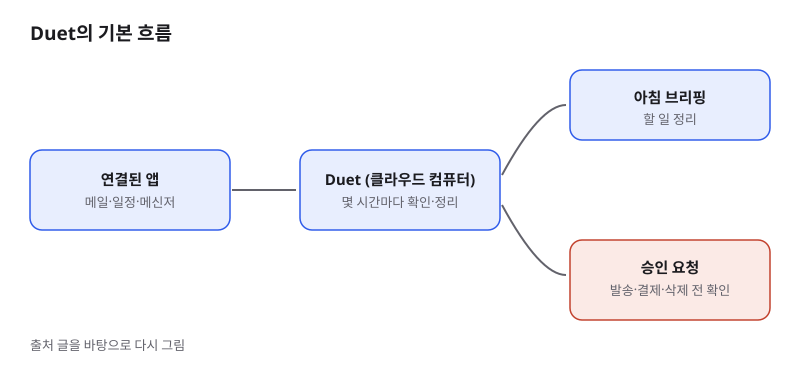
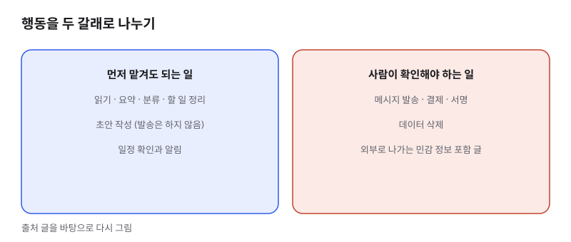

Anthropic의 에이전트 Claude Duet, 입문자가 알아야 할 것
- Anthropic이 대화창에서 질문에 답하는 것을 넘어, 연결된 앱을 주기적으로 살피고 필요할 때만 사용자에게 묻는 에이전트 Claude Duet을 리서치 프리뷰로 내놓았습니다.
- Opus 5.5 모델 위에서 돌고, 별도 앱(웹·iOS·Android)으로 제공됩니다. 현재는 미국의 Pro·Max 구독자 대상 대기 신청만 받습니다.
- 입문 개발자에게는 "AI가 내 일을 대신 처리할 때 어디서 사람이 승인해야 하는가"를 설계하는 실전 사례로 볼 만합니다.
Claude Duet은 "질문하면 답하는 AI"에서 "알아서 확인하고, 중요한 순간에만 부르는 AI"로 가려는 흐름을 보여 주는 제품입니다. 이 흐름이 개발자 커뮤니티에서 화제가 된 이유는 메일·일정·결제 같은 실제 업무 도구에 AI가 손을 대기 시작했기 때문입니다.
01한눈에 보기
평소에 AI는 요청을 받아야 움직이는 상담원에 가깝습니다. Claude Duet은 그 상담원에게 사무실 열쇠와 메일함 권한을 주되, 중요한 결정은 반드시 본인에게 되묻게 만든 비서에 가깝습니다. 아침에 확인할 일을 브리핑해 주고, 몇 시간마다 연결된 앱을 살펴보며, 메시지 발송이나 결제처럼 되돌리기 어려운 행동 앞에서 멈춥니다.

커넥터: Gmail·Slack처럼 외부 서비스를 AI에 연결하는 통로. 요약 글에 따르면 6,000개 이상이 지원됩니다.
리서치 프리뷰: 정식 출시 전 일부 사용자에게 먼저 열어 보는 단계.
02어떻게 동작하나요
입력은 사용자가 연결한 앱의 새 소식과 사용자가 직접 보내는 메시지입니다. 처리는 Anthropic이 마련한 클라우드 컴퓨터 안에서 이뤄집니다. 로그인과 안전 확인도 이 환경에서 처리됩니다. 출력은 두 가지입니다. 하나는 아침 브리핑과 정리된 할 일이고, 다른 하나는 승인 요청입니다. 메시지 발송, 결제, 서명, 삭제 같은 행동은 사용자가 명시적으로 확인해야 실행됩니다. 외부로 나가는 내용은 민감한 정보가 섞였는지 분류기가 한 번 더 검사합니다.

03왜 지금 화제인가요
이번 발표가 눈에 띈 이유는 에이전트가 "대화 상대"에서 "업무 처리 주체"로 넘어가는 지점을 Anthropic이 제품으로 정면에 내세웠기 때문입니다. 같은 날 Walmart도 승인된 AI 에이전트가 재고를 찾고 구매할 수 있는 MCP 서버를 내놓아, 에이전트가 실제 거래에 들어가는 흐름이 함께 주목받았습니다.
04관련 나라·기업
| 구분 | 이름 | 어떤 관련이 있나 |
|---|---|---|
| 기업 | Anthropic | Claude Duet을 만든 회사이며, 이 제품의 기반 모델 Opus 5.5도 같은 회사 것입니다. |
| 모델 | Opus 5.5 | Duet이 그 위에서 도는 모델입니다. 공개 모델 목록에 정식 등재된 모델인지는 이번 글에서 확인하지 못했습니다. |
| 나라 | 미국 | 대기 신청 대상이 미국 사용자로 한정돼 있습니다. |
05기존 방식과 무엇이 다른가
| 비교 항목 | 기존 AI 채팅 | Claude Duet |
|---|---|---|
| 시작 방식 | 사용자가 질문해야 시작 | 주기적으로 연결 앱을 확인하고 먼저 알림 |
| 결과물 | 대화창의 답변 | 아침 브리핑과 정리된 할 일 목록 |
| 외부 행동 | 사용자가 직접 복사해서 실행 | 민감한 행동은 승인 후 실행 |
| 사용 한도 | 구독 한도 안에서 대화 사용 | 확인 작업도 같은 구독 한도를 씀 |
06직접 해 보기
아직 미국 Pro·Max 구독자의 대기 신청 단계라서, 입문 개발자가 지금 바로 해 볼 수 있는 일은 제품을 쓰는 것보다 설계 원칙을 배우는 것입니다. 본인이 만드는 작은 자동화가 있다면 아래 순서로 점검해 보세요.
- 자동으로 실행해도 되는 작업(읽기, 요약, 분류)과 사람이 확인해야 하는 작업(발송, 결제, 삭제)을 표로 나눠 적습니다.
- 승인 요청이 너무 자주 뜨면 사용자가 무심코 누르게 된다는 점을 기억하고, 승인이 꼭 필요한 순간만 남깁니다.
- 외부로 나가는 글에 개인정보나 비밀번호가 섞이지 않았는지 보내기 전 검사하는 단계를 넣습니다.
07주의할 점과 한계
- Anthropic은 스레드를 잘못 읽거나, 긴급도를 잘못 판단하거나, 확인 사이에 도착한 중요한 메시지를 놓칠 수 있다고 직접 밝혔습니다. 중요한 일은 원본을 한 번 더 확인하세요.
- Duet의 확인 작업도 구독 사용 한도를 함께 씁니다. 요금제를 따로 받는 방식인지는 요약 글에 명시돼 있지 않습니다.
- Team·Enterprise 요금제는 아직 대상이 아닙니다. 회사 계정으로 쓰려는 계획이라면 출시 뒤 조건을 다시 확인해야 합니다.
- 이 글은 요약 뉴스 페이지 두 곳을 근거로 했습니다. 제품 공식 발표문은 열어 보지 못해 세부 수치와 문구는 바뀔 수 있습니다.
08정리
Claude Duet이 주는 메시지는 "AI가 일을 할수록 사람이 어디서 멈출지를 먼저 정해야 한다"는 것입니다. 기능이 강해질수록 승인 지점이 제품의 신뢰를 좌우합니다. 입문 개발자라면 프롬프트를 잘 쓰는 법보다, 자동화 안에서 사람이 개입해야 할 자리를 설계하는 감각을 먼저 키우는 편이 오래 씁니다.
아직 대기 신청 단계이고 정식 공개 전이므로 기능과 조건은 바뀔 수 있습니다. 지금은 내가 맡길 일과 맡기지 않을 일을 나눠 두는 것부터 시작해 보세요.
09참고한 글
- AI News for October 22, 2026 — Daily Edition AI Weekly · 2026.10.22
- Anthropic opens Claude Duet, an Opus 5.5 agent, to US Pro and Max AI Weekly · 2026.10.22